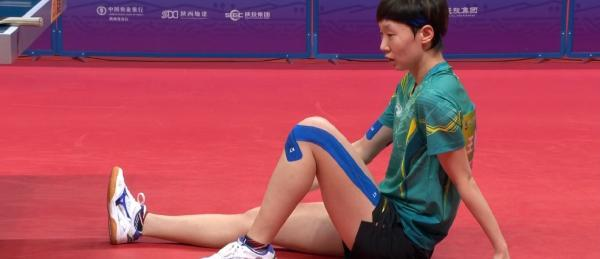

刘诗雯和许昕。东京奥运混双决赛，那是一个刘诗雯和许昕都无法忘却的夜晚，许昕那句“我们俩没有给自己一个好结局”如今听来依旧悲怆。 24日晚，“昕雯”组合再次来到混双决赛舞台——他们4-2击败王曼昱/曹巍组合，拿下混双金牌。
王曼昱受伤倒地。第一局比赛，许昕/刘诗雯11-8赢下；第二局两人再以11-5获胜；第三局比赛王曼昱/曹巍11-3扳回一局， 这也是本届全运会“昕雯”丢掉的第一局。进入第四局8-8时，王曼昱大腿出现伤病，只能在场地内请求医疗暂停——经过短暂治疗后， 王曼昱带伤坚持比赛。最终本局许昕/刘诗雯12-10拿下。
第五局比赛，王曼昱/曹巍11-9拿回一局；第六局，许昕/刘诗雯上来就以7-0领先，
却被王曼昱/曹巍破釜沉舟9-8反超，
好在最终稳住阵脚，“昕雯”13-11拿下金牌！